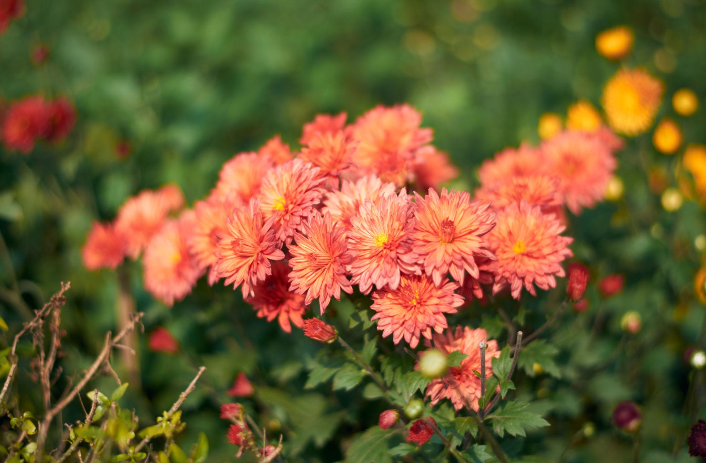
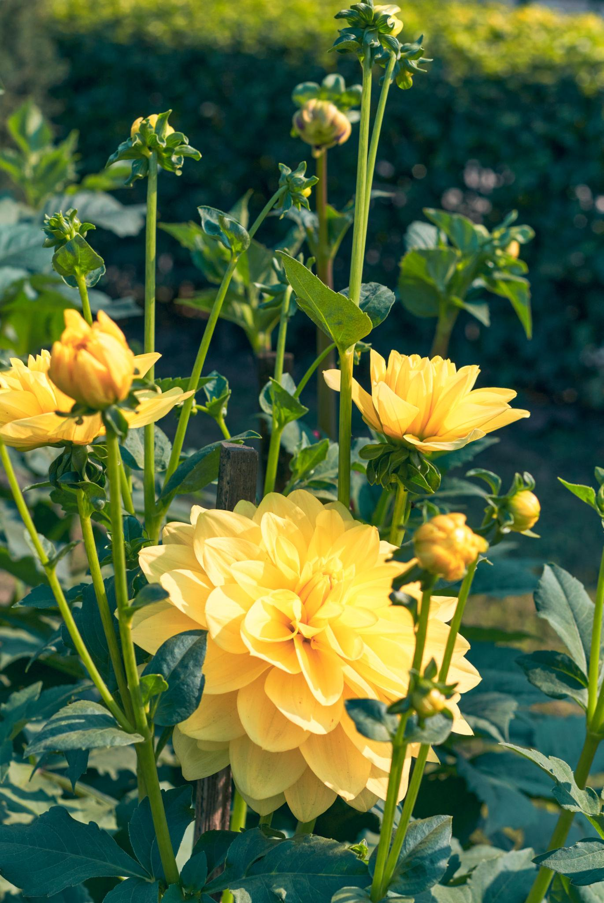
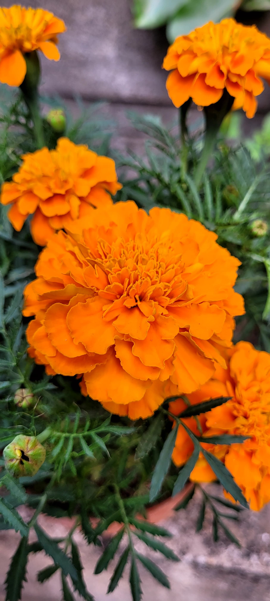
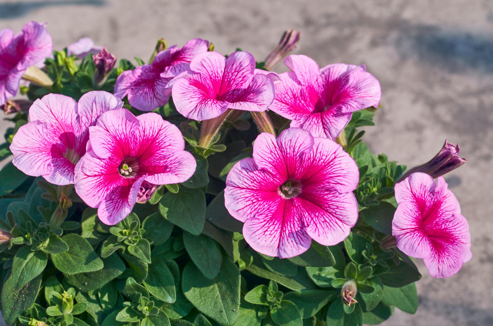

A beautiful collection of flowers blooming in the golden colors of the winter season.
Winter is one of the most pleasant and beautiful seasons in Bengal.
Usually arriving toward the end of the year, winter brings cool and
comfortable weather after the heat and humidity of the warmer months.
The mornings are often covered with soft mist, while clear blue skies,
gentle sunlight, and chilly evenings create a peaceful atmosphere. Trees
and gardens look fresh and lively, making winter an especially enjoyable
time for spending time outdoors.
Winter is also a wonderful season for flowers and gardening in Bengal.
Many seasonal flowers such as Chandramallika, Dahlia, Petunia, Pansy,
and Marigold bloom beautifully during this period, adding bright colors
to gardens and balconies. The season is closely connected with Bengali
outdoor life, winter picnics, fairs, fresh vegetables, and cultural
activities. For many Bengalis, the colorful flowers, cool breeze, warm
sunlight, and festive atmosphere make winter a truly special part of the
year. 🌸❄️

Chandramallika , commonly known as Chrysanthemum, is one of the
most beautiful flowers associated with the cool season in Bengal. It
produces dense, layered blooms in many colors, including pink, white,
yellow, purple, red, and orange. Its rounded flower heads and rich
colors make it a striking addition to winter gardens, balconies, and
flower beds.
Chandramallika, commonly known as Chrysanthemum, is one of the most
beautiful flowers associated with the cool season in Bengal. It
produces dense, layered blooms in many colors, including pink, white,
yellow, purple, red, and orange. Its rounded flower heads and rich
colors make it a striking addition to winter gardens, balconies, and
flower beds

Dahlia is a spectacular winter flower admired for its large
blooms and beautifully arranged petals. It comes in a wide range of
colors, including red, pink, yellow, orange, purple, and white. Some
varieties produce exceptionally large flowers, making Dahlia one of
the most eye-catching plants in a seasonal garden.
Dahlias are particularly attractive in Bengal's winter gardens because
their colorful blooms stand out beautifully against the cool-season
greenery. They can be grown in garden beds as well as large pots and
need sunlight, regular watering, and well-drained soil to perform
well. With proper care, they can become the centerpiece of a winter
flower garden.

winter Marigold is one of the most popular winter flowers in
Bengal. Its bright yellow and orange blooms bring a cheerful and
lively appearance to gardens during the cooler months. The flowers are
easy to grow and are commonly found in home gardens, balconies, parks,
and decorative flower beds.
Marigold also has an important place in Bengali culture and festivals.
Its vibrant colors are widely used for puja, Durga Puja decorations,
weddings, garlands, and traditional celebrations. Because of its
bright appearance and long-lasting blooms, it is a favorite flower for
creating a colorful winter garden.

Petuniais a popular winter flowering plant known for its soft,
trumpet-shaped flowers. It blooms in many colors, including purple,
pink, red, white, and blue, with some varieties displaying attractive
stripes and patterns. Its spreading growth makes it especially
suitable for pots, hanging baskets, balconies, window boxes, and
garden borders.
Petunias perform particularly well during India's mild winter and can
continue flowering for a long period when provided with sufficient
sunlight and proper care. In Bengal, their colorful blooms can
transform a balcony or garden into a lively winter display. The
combination of purple, pink, and white varieties creates a soft and
cheerful seasonal atmosphere.